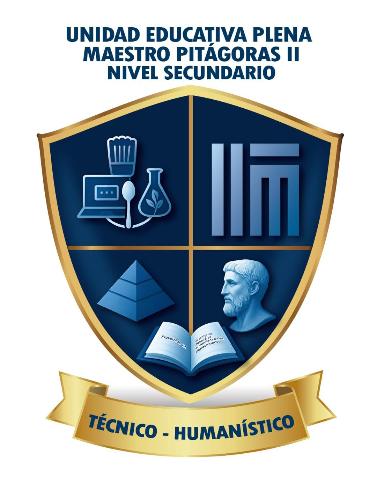

Problema identificado
El registro manual en cuadernos dificulta la organización, el acceso rápido y el análisis de resultados, goles y estadísticas del campeonato.

Unidad Educativa Técnico Humanístico
Proyecto Productivo · Sistemas Informáticos · 2026
Plataforma digital para registrar campeonatos escolares, publicar resultados, controlar tarjetas, organizar jugadores y generar estadísticas deportivas de forma clara.
Resultados, tarjetas, goleadores, equipos y fichas de jugadores en una sola página.
Partidos
Control de quién va ganando, quién va perdiendo, partidos programados y resultados finales.
Rendimiento
La tabla se calcula automáticamente con partidos finalizados.
| Pos. | Equipo | PJ | PG | PE | PP | GF | GC | DG | Pts |
|---|
Planteles
Lista pública de jugadores con datos deportivos. La ficha completa queda para el panel administrativo.
Análisis
Goleadores, tarjetas amarillas, tarjetas rojas y resumen disciplinario.
| Jugador | Equipo | Goles |
|---|
| Jugador | Equipo | Amarillas | Rojas |
|---|
Base del proyecto
Contenido adaptado al sistema web del campeonato de futsal.
El registro manual en cuadernos dificulta la organización, el acceso rápido y el análisis de resultados, goles y estadísticas del campeonato.
Desarrollar una plataforma digital para gestionar, organizar y analizar la información de campeonatos de futsal en la unidad educativa.
Acceso privado
Ingrese con el usuario y contraseña definidos para editar datos, resultados y tarjetas.